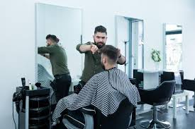

Welkom bij KNAP KNIPPEN
Dé barbier van Beuningen voor de moderne man
Over Ons
Welkom bij Knap Knippen – De Barbier van Beuningen
Sinds 2016 is Danny dé barbier waar Beuningen op rekent voor ambachtelijk en stijlvol haar- en baardonderhoud. Bij Knap Knippen beleef je niet alleen een knipbeurt, maar een ervaring waarbij vakmanschap centraal staat.
Of je nu komt voor een strakke scheerbeurt of een stijlvolle coupe – Danny's deskundigheid en passie zorgen ervoor dat je altijd tevreden en met een glimlach de deur uitgaat. Dit blijkt ook uit de meer dan 120 lovende reviews die Knap Knippen een uitmuntende waardering van 4,9 sterren opleveren.
Knap Knippen bevindt zich in het hart van Beuningen, waardoor je makkelijk binnen kunt stappen voor jouw afspraak. En een afspraak maken? Dat is een fluitje van een cent. Boek eenvoudig online of bel ons direct om je bezoek in te plannen.
Dus waar wacht je nog op? Ervaar zelf de kwaliteit en persoonlijke service die Knap Knippen zo speciaal maakt. Danny verwelkomt je graag!